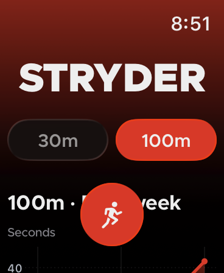
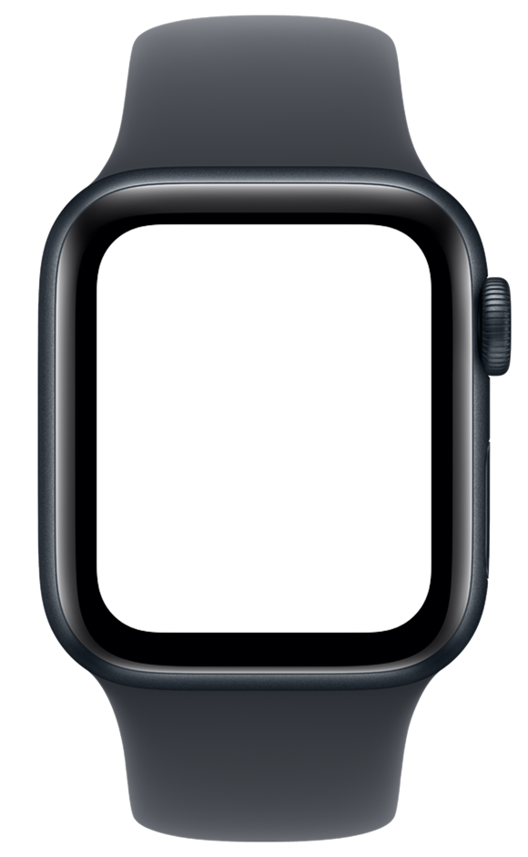
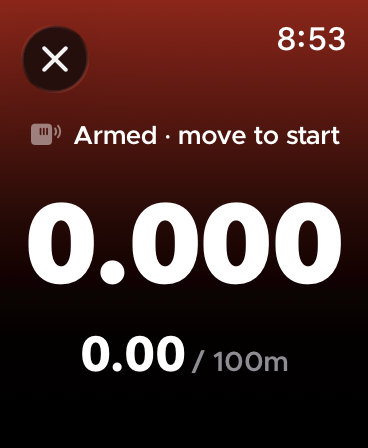
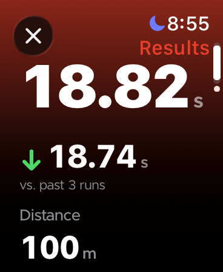
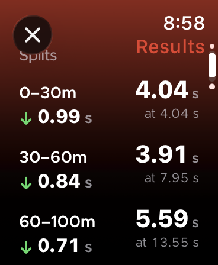
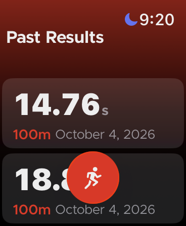

Sprint timing from your wrist.
You're on the waitlist. We'll email you when the beta opens.
Beta updates only. Unsubscribe anytime. You must be 13 or older. Privacy policy


–
Improvement over your past five 100m sprints
–
0–30m split
–
30–60m split
–
60–100m split
Starts on your first push
Set your distance and get in position. Stryder starts the clock on your first explosive movement, so nobody has to stand at the start line with a stopwatch.

Stops at your distance
Stryder uses your watch's GPS and motion sensors to track how far you've run, and stops the time when you reach the distance you set.

See where the time went
Stryder breaks each sprint into splits, so you can see how your start, middle and finish each went, not just the final time.

Review the whole run
A stopwatch gives you one number. Stryder saves your time and distance through the whole run, so you have more than a single result to look back on.

- No iPhone needed
- Stryder runs on Apple Watch by itself.
- Free during the beta
- Nothing to buy while Stryder is in beta, and no ads in the app.
- Accuracy validation in progress
- We're measuring Stryder's accuracy on a real track, and will publish the result and method here.
Why Stryder
Track athletes, particularly sprinters and hurdlers (but also jumpers who are working on speed, as well as athletes in other sports that rely on short-distance speed), need to know their times to understand how well they are performing in practice. However, existing solutions range from inexpensive but inaccurate (stopwatches and hand timing) to completely unaffordable (laser timing gates, $1000+) and more accurate than practice needs.
Another related issue is that athletes need to know more than just their 100m time trial. Individual split segment times further detail strengths and weaknesses. Graphs tracking performance over the past month are helpful for visualizing improvements.
Stryder fixes both problems: an affordable smartwatch app that times runs automatically using the watch's embedded sensors, achieving practice-level accuracy without expensive hardware, and includes extensive data analysis features.
As a student-athlete myself who is trying to lower my own times, I felt that the existing systems of stopwatches and just remembering my times did not work well enough to understand how I was doing.
Currently, Stryder is in the early development phase. The baseline stride detection model is in development, and basic data analysis features have been implemented.